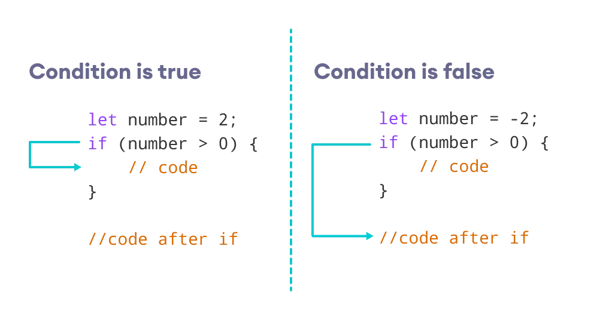

JavaScript é uma linguagem de Programação que dá vida a nossa página Web, podemos fazer toda a interação da página com ela. Para escrevermos o nosso primeiro Hello World, podemos usar o 'alert' e conseguimos assim imprimir qualquer mensagem na tela:
alert('Hello World!');
Algorítmos
É um passo a passo que você segue para alcançar determinado objetivo, é literalmente isso, o computador funciona a base de algorítmos. Se a gente quer que o computador execute uma função por exemplo, precisamos passar uma sequência lógica de comandos para que ele consiga executá-los. Precisa ser claro e muito detalhado para que não haja espaço para segundas interpretações.
Suponhamos que você tenha que passar comandos de como preparar um café feito no coador para uma máquina, vamos definir um algorítimo para isso:
- Verificar SE há pó de CAFÉ, SE SIM prossegue, SE NÂO mostrar uma mensagem que não tem pó de café;
- Verificar SE tem Água (300ml), SE SIM prossegue, SE NÃO encher o recipiente com ÁGUA (300ml);
- Verificar SE o fogo está aceso, SE SIM prossegue, SE NÃO acenda o fogo;
- Colocar o Recipiente com ÁGUA para esquentar;
- Colocar 3 colheres (sopa) rasa de pó de café no coador
- Verificar SE a Água está em ponto de ebulição (100°C), SE SIM jogue a Água quente dentro do coador em cima do pó de CAFÉ, SE NÃO espere até que a ÁGUA atinja 100°C.
- SE a caneca estiver vazia ENCHER com o CAFÉ
- SE estiver cheia, BEBA.
Dica para inserir comentários dentro do VSCode: Aperte Ctrl + :/;
Identificadores de Variáveis
- Podem começar com letra, $ ou _
- Não podem começar com números
- É possível usar letras ou números
- É possível usar acentos e símbolos
- Não podem conter espaços
- Não podem ser palavras reservadas
Tipos primitivos
Um comando dentro do JS para saber o tipo de variável, se usa o typeof.
- Number - Infinity, NaN
- String
- Boolean
- Null
- Undefined
- Object - Array
- Function
Manipulação de DADOS
var nome = window.prompt("What's your name"?) // para abrir uma janela de pergunta na web
// a variável nome recebe o comando acima
window.alert('É um grande prazer te conhecer' + nome + '!')
// para usar a variável nome é necessário concatenar
Para fazer soma entre as variáveis
var n1 = window.prompt("Digite um número")
var n2 = window.prompt("Digite outro número")
var s = n1 + n2
window.alert('A soma dos valores é:' + s)
O sinal de + serve para concatenação, logo o resultado que será impresso caso coloquemos 1 + 3 = será 13. O comando do Prompt retorna 'string', para que os números sejam somados é preciso converter a string em number. Então o comando ficará assim
var n1 = Number.parseInt(window.prompt("Digite um número"))
var n2 = Number.parseInt(window.prompt("Digite outro número"))
var s = n1 + n2
window.alert('A soma dos valores é:' + s)
/* os comandos que podem ser usados: Number.parseInt() para números inteiros
e Number.parseFloat() para números reais. E ainda nas versões mais atualizadas
pode se usar só Number() que o JS já entende e faz a conversão independente se for
inteiro ou real.*/
Se for necessário a coversão de Número para String, podemos usar as duas formas:
String(n)
n.toString()
Uma forma de fazer a junção das coisas ao invés de concatenar, podemos usar essa fórmula abaixo, até mesmo para deixar o código mais limpo:
var s = "JavaScript"
"Eu estou aprendendo" + s // concatena s
var nome = 'Gustavo'
var nota = 7,5
var matéria = 'Geografia'
`O aluno ${nome} tirou ${nota} em ${matéria}` // template string
Outros formatos de string que podemos utilizar
var s ='JavaScript'
s.length // quantos caracteres a string tem
s.toUpperCase() // transforma tudo em letras maiúsculas
s.toLowerCase() // transforma tudo em letras minúsculas
Para formatar números, trocar ponto por virgula, acrescentar casas decimais, pode se usar o código abaixo:
var n1 = 1541.5
n1.toFixed(2) //para fixar 2 casas decimais
console.log(n1)
1541.50 // o que será impresso
n1.toFixed(2).replace(".",",") //para trocar ponto por virgula
console.log(n1)
1541,50
n1.toLocaleString('pt-BR', {style:'currency',currency:'BRL'})
// para converter para real, dolar entre outros.
se trocar 'BRL' por 'USD' o cifrão aparece em dolar, se colocar
'EUR' imprime o euro.
Condicionais
O conceito de Condicionais é bem simples de entender, se trata de comandos que serão executados 'se' algo acontecer ou 'se não' acontecer outros comandos podem ser executados, bem como o sentido da palavra.
Exemplo:
Imagine que você vai desenvolver uma página de um site de bebidas alcólicas, no Brasil a faixa etária permitida para o consumo de bebidas alcólicas é acima de 18 anos. Logo se o consumidor for de menor, será necessário que você crie uma condição que não permita que o mesmo consiga comprar a bebida
Digite a sua Idade:
Nesse exemplo acima, usei uma condicional para verificar a idade de uma pessoa
Operador Ternário
O Operador Ternário é uma outra forma de codar uma condição, só que mais simplificado. Vamos ver na prática:
var idade = 17;
function verificar() {
idade >= 18 ? console.log('Pode!') : console.log('Não pode!');
}